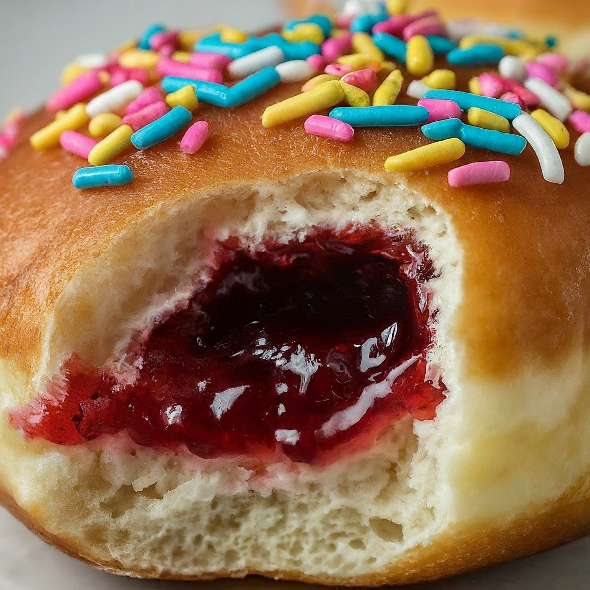

Jam Doughnut
Ingredients
- 2&1/2 cups all-purpose flour
- 1/4 cup granulated sugar
- 2 1/4 tsp active dry yeast
- 1/2 tsp salt
- 1/2 cup whole milk
- 1/4 cup water
- 1/4 cup unsalted butter, softened
- 1 large egg
- 1/2 cup jam (your choice of flavor)
- Oil for frying
- Extra granulated sugar for coating
Instructions
- In a large mixing bowl, combine 1 cup of flour, sugar, yeast, and salt.
- In a small saucepan, heat the milk, water, and butter until warm (not hot).
- Add the milk mixture to the flour mixture and beat until smooth.
- Add the egg and remaining flour, one cup at a time, to form a soft dough.
- Turn the dough onto a floured surface and knead until smooth and elastic, about 5-7 minutes.
- Place the dough in a greased bowl, cover, and let rise in a warm place until doubled in size, about 1 hour.
- Punch down the dough and turn it onto a lightly floured surface. Roll out to 1/2-inch thickness.
- Cut with a floured 2 1/2-inch round cutter. Place on greased baking sheets. Cover and let rise until doubled, about 30 minutes.
- In a deep fryer or large saucepan, heat oil to 375°F (190°C). Fry doughnuts, a few at a time, until golden brown on both sides. Drain on paper towels.
- When cool enough to handle, make a small hole in the side of each doughnut. Fill a pastry bag with jam and pipe it into each doughnut.
- Roll doughnuts in extra sugar to coat. Serve warm or at room temperature.
